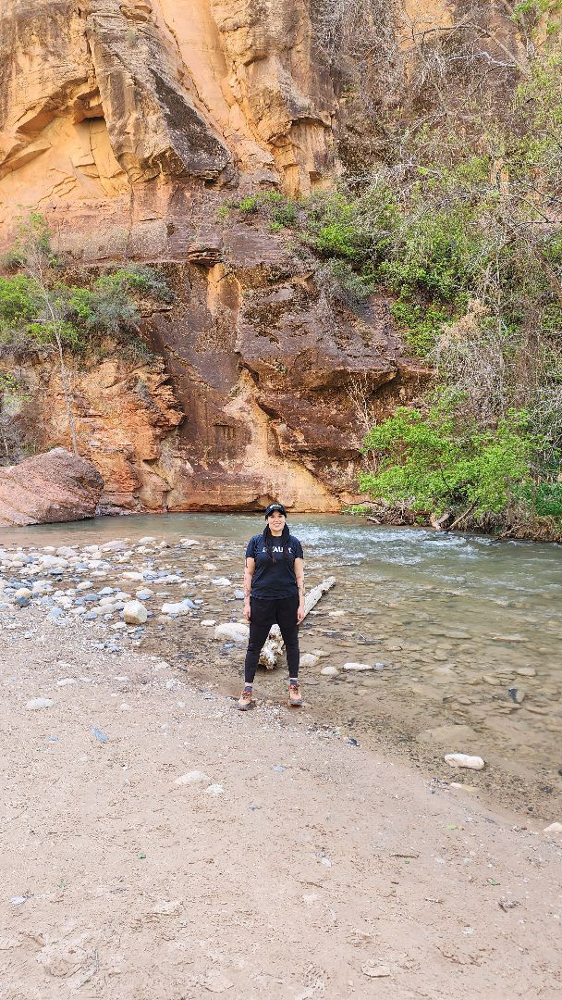

Zion National Park 2026

Zion National Park 2026
For this year's National Park excursion, my partner and I visited Zion National Park in Utah. As with previous National Park trips, we went in April (happy 4/20!). However, there were differences as compared to trips prior, such as driving to the destination as opposed to flying and staying in a nearby hotel, instead of our usual tucked away Airbnb. All in all though we were pleasantly surprised by how much we enjoyed Zion, so continue reading for the full adventure!
Typically, the drive to Zion from Phoenix, AZ is about 6 hours, but we extended our drive by first visiting the Grand Canyon. This may be a shock to some, but up until this trip, I had never visited the Grand Canyon-- this is coming from someone who has lived in AZ her entire life! Our visit, like many others who "see" the Grand Canyon, was short lived-- we got out of our vehicle a couple of times, gazed out at the gaping canyon below, took a few pictures and then we were on our way. Not to discount the Grand Canyon, but in all fairness, it was not our primary reason for the trip.
The drive from AZ to UT was surprisingly beautiful, as compared to drives to NV or CA, for example. It seemed like every hour or so we would come across another unique landscape-- a strange fusion of desert scenery mixed with forest and greenery. There were also remnants of a bygone era, sprinkled with dilapidated roadside stops and lodges. Among the makeshift structures were many advertising "navajo jewelry." As we got closer to our destination, scaling redrock mountains seemed to appear out of nowhere, similar to the fictional "radiator springs" town in the Pixar movie "Cars."
After winding down the mountains and into the canyon, we made it to the little town of Springdale, where we checked into our hotel. If you ever find yourself visiting Zion, I highly suggest staying at one of the several lodging options in Springdale, as there is really everything you need literally walking distance, including a shuttle that takes you directly into the park, along with plenty of eateries and little markets. Speaking of, it was nearly 7:00pm when we finally checked in, so we decided to catch dinner at Bit and Spur, a Mexican restaurant. We were delighted to have food in our bellies and to celebrate our arrival over drinks, so it wasn't long after dinner that we turned in for the night, excited for the park adventures to follow!
Due to excellent backout curtains in our room, we slept in, got ready for the day and grabbed some coffee. We also hit up a nearby market for water (to fill up our camelbacks) and snacks. Conveniently, we then took the Springdale shuttle into the park, where we were dropped off at the visitor center and paid for our park passes (good for 7 days). Once in the park, there is also a shuttle to transport visitors to the 9 different stops in the park. We did not venture far before conquering our first trail, Watchman trail, which was a perfect hike to break in the day. We then rode the shuttle and familiarized ourselves with the park.
On one of our random ventures, we found ourselves walking along a dirt path with trees lined on either side, when we noticed a rodent of sorts pop out of a hole in the ground, scooping out little fistfulls of dirt. My partner and I were frozen with amazement, and very lucky that the rodent did not pause his work on our behalf, so we just watched him in awe for a few minutes-- it was magical! Among the wildlife, there were also huge lizards, turkeys and squirrels; there were also countless little fuzzy caterpillars, which were most often accompanied by a small child picking them up. By midday we were ready for lunch, so we stopped at the Zion lodge, which houses a small cafeteria with ready to go foods (like cold sandwiches) but also some hot options, like chicken nuggets and pizza. We ate our food under a huge canopy of trees in a grass field surrounding the lodge. Once properly fueled, we then went on to our next hike, the riverside walk, which stretches all the way to the famous narrows. Unfortunately, we were not equipped with water gear, but next time we will plan to wade through the actual river. Once back at the shuttle, fixing to return to Springdale, the shuttle driver alerted visitors to a "situation" that happened, forcing them to close stops 6-9 of the park. We later learned that a man had sadly died, having fallen from Angel's Landing, the most strenuous hike in the park.
Fulfilling the motto "when in Rome" my partner and I decided to go all out for dinner and ate at the upscale Italian restaurant in Springdale, Dulivia Ristorante Italiano, and it did not disappoint! Dulivia was definitely the best food we had on the entire trip and the service was just as amazing-- highly recommend! After dinner, we waddled with our full bellies back to the hotel and got ready for our second day exploring Zion.
By day two, we were pretty confident in navigating the park, so we decided to take things to the next level and rent E-bikes. Scattered throughout Springdale are several E-bike rental establishments, but we ended up renting ours from Zion Cycles. I can't stress enough how fun riding through the park is-- with only the occasional shuttle and other bikers to look out for, you can nearly fly down the winding roads! My partner and I even got up to 30 mph when in "turbo" mode! We rode the entire stretch of the shuttle path a couple of times through, and some portions several times. Besides biking, we also managed two hikes-- the Weeping Rock and the Emerald Pools. The Weeping rock had to be my favorite-- you climbed up to this curved rock, speckled with a patchwork of moss, with literal water dropping from the top edges-- hard to explain without experiencing it for yourself. While the emerald pools were a little lackluster, given the more difficult hike to get to them, but still beautiful nonetheless. Following tradition, we also grabbed lunch again at the Zion Lodge. We needed to return the bikes by 5:30, so we squeezed as much time as we could and stayed in the park until 5:00, sad that our trip was coming to an end.
Dinner on night three fell short of the previous night's eatery, but we made up for it by visiting a small bar next to our hotel, Cowboys & Angels Saloon, and ended the night reminiscing about our time in Zion over drinks.
As I compare Zion to other National Parks I have visited, I am impressed by the infrastructure within and around the park. Although I do love being immersed in nature, tucked away in an airbnb, the ease and proximity of the hotel allowed us to sleep in and not worry about getting to the park super early. Being in Springdale also made the trip optimal by having everything we needed just walking distance away. Also, the various shuttles and even the use of bikes made navigating the park a breeze! Compared to Yosemite, where we were limited to where we could park, we were able to explore all parts of the park by foot, bike and shuttle. With Zion only being a 6 hour drive from home, I would most definitely visit again!